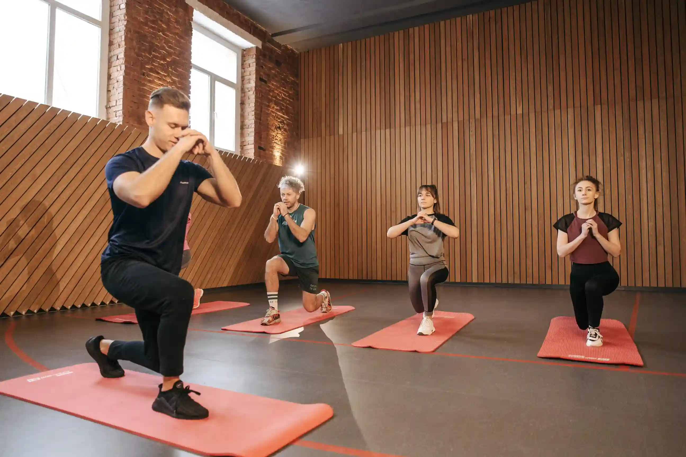
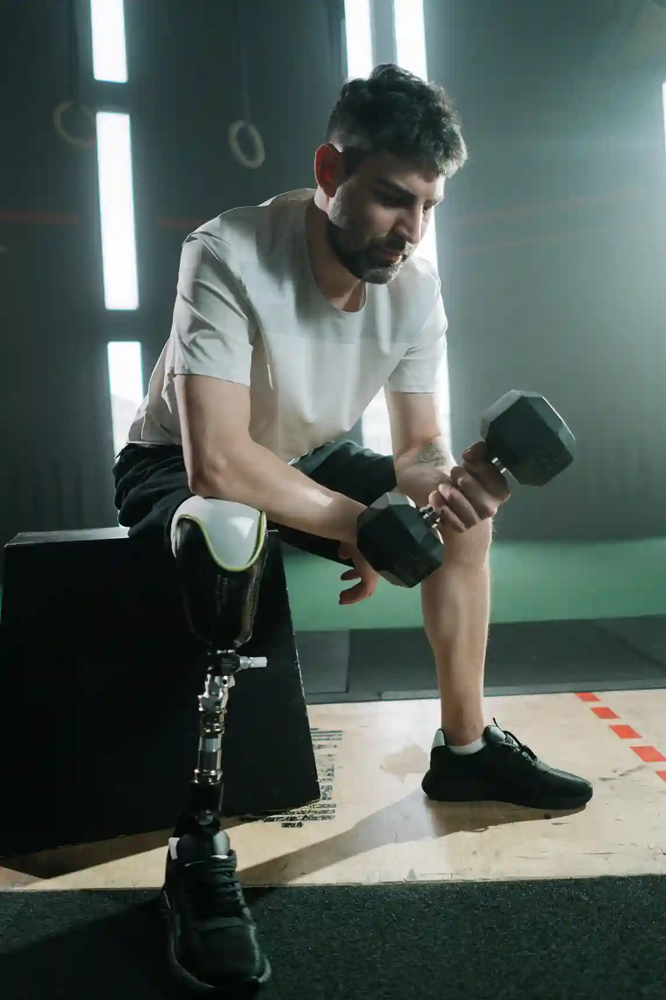

Physical therapy
Strength, mobility and pain management after injury or surgery, with hands-on sessions and hydrotherapy.
- Good for
- Post-surgery recovery, sports injury, chronic pain
- Typical length
- 4 to 12 weeks
Our therapies
Four therapies, one coordinated team. Your plan is built around your goals and adjusted every week.
Therapy finder
Choose what feels closest. We will point you to a good first step.
Physical therapy
Rebuild strength, mobility and confidence after injury or surgery, with a plan that eases pain and respects your pace.
Typical length: 4 to 12 weeks
What is included
Our therapies
Each therapy stands alone or works with the others. Scroll to explore.

Strength, mobility and pain management after injury or surgery, with hands-on sessions and hydrotherapy.
Medically supervised detox followed by counselling, group work and a plan for life after treatment.
Therapy, mindfulness and meditation for anxiety, trauma and burnout, led by psychiatrists and counsellors.

Group fitness and functional training that rebuild confidence in your body and a routine you can keep.
Daily rhythm
A gentle rhythm of therapy, rest and company. Scroll to follow the day.
Gentle stretching or a walk through the gardens to wake the body.
One-to-one time with your therapist, tailored to your plan.
Nutritious food eaten together, planned with a dietitian.
Small groups, practical skills and time with peers who understand.
Rest, read, walk or call home. This part of the day is yours.
Guided breathing and low light to prepare for restful sleep.
Program format
The same team and therapies either way. Pick the format that fits your life right now.
Step away from daily pressure. You have a private room, round-the-clock care and a full schedule of therapy.
Talk to an advisorAttend therapy for the day and return to your family in the evening. Ideal when your recovery is steady and your home is supportive.
Talk to an advisorCommon questions
Can't find your answer? Ask an advisor directly. We are happy to talk, at any hour.
Yes. Most people do. Your team builds one plan that blends therapies and adjusts it every week.
A doctor and a lead therapist oversee your plan, with specialists joining as you need them.
We set goals with you at the start and review them weekly, so progress is clear to you and your family.
Always. Your information is shared only with your care team, or with family when you agree.
Talk to us
Tell us what is happening and an advisor will help you choose, at no cost and with no pressure.